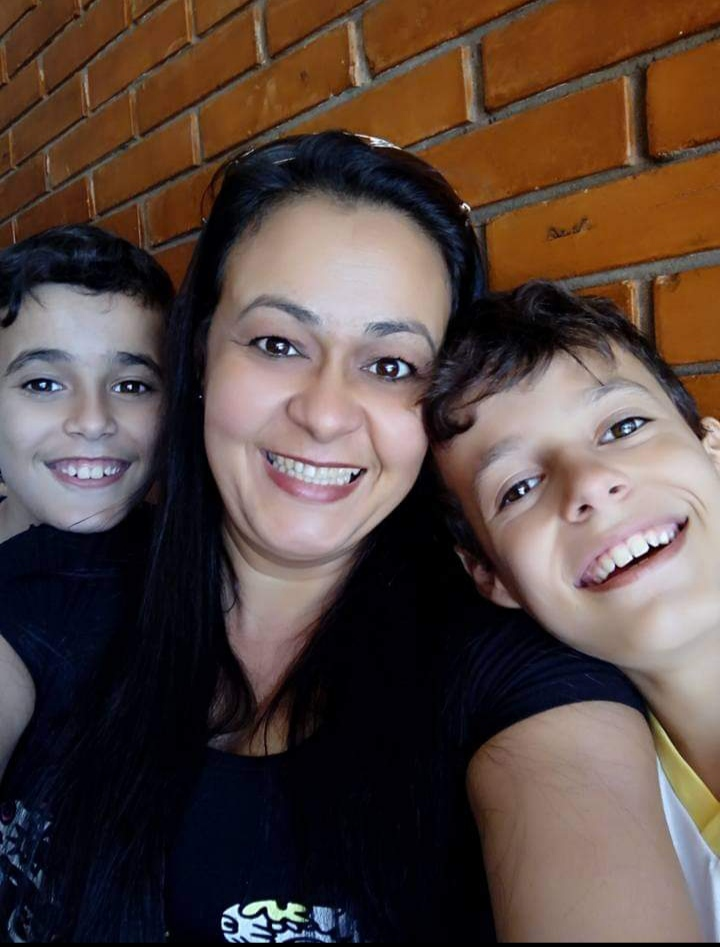
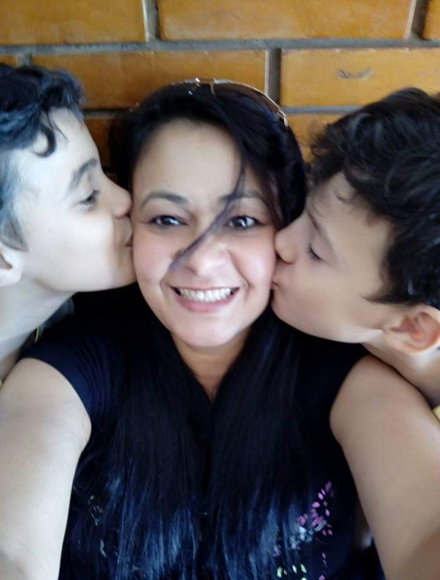

Ser mãe é exercer com dedicação total a profissão mais dura que existe, e receber amor eterno como pagamento.
Minha mãe é uma pessoa incrível. Ela é gentil, carinhosa e sempre se preocupa com o bem-estar de todos ao seu redor. Sua presença é reconfortante e seu sorriso ilumina qualquer ambiente. Ela é uma mulher forte e determinada, sempre disposta a enfrentar os desafios da vida de cabeça erguida. Minha mãe é uma fonte inesgotável de sabedoria e conselhos. Ela sempre encontra as palavras certas para me encorajar e me apoiar em todas as minhas decisões. Sua paciência e compreensão são infinitas, e eu sou imensamente grato por tê-la ao meu lado. Além disso, minha mãe é uma cozinheira de mão cheia. Seus pratos são verdadeiras obras de arte gastronômicas, repletos de sabor e amor. Ela sempre me surpreende com suas habilidades culinárias e me ensina a importância de compartilhar momentos especiais em torno da mesa. Minha mãe também é uma mulher trabalhadora e determinada. Ela se esforça ao máximo para alcançar seus objetivos e nunca desiste diante dos obstáculos
ua perseverança é um exemplo inspirador para mim e me motiva a sempre buscar o melhor em tudo que faço. Em resumo, minha mãe é uma pessoa extraordinária. Ela é o pilar da nossa família, a fonte de amor e apoio incondicional. Sou abençoado por tê-la como minha mãe e sou grato por tudo que ela faz por mim. Eu a amo mais do que palavras podem expressar.
 